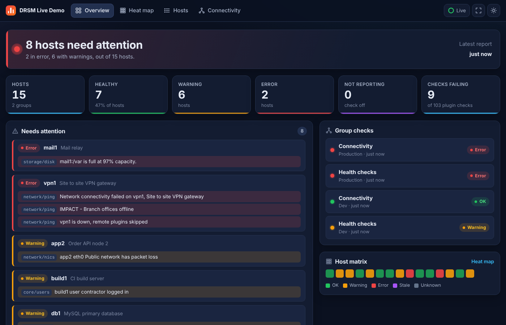
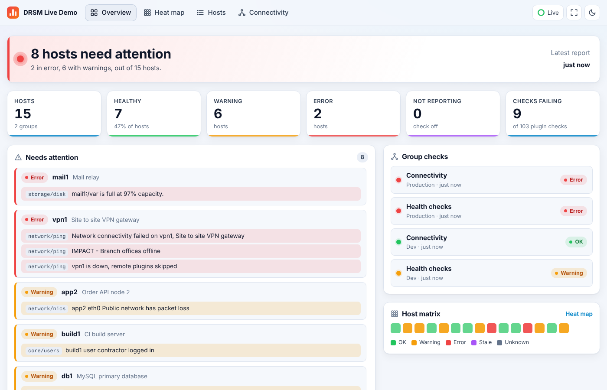
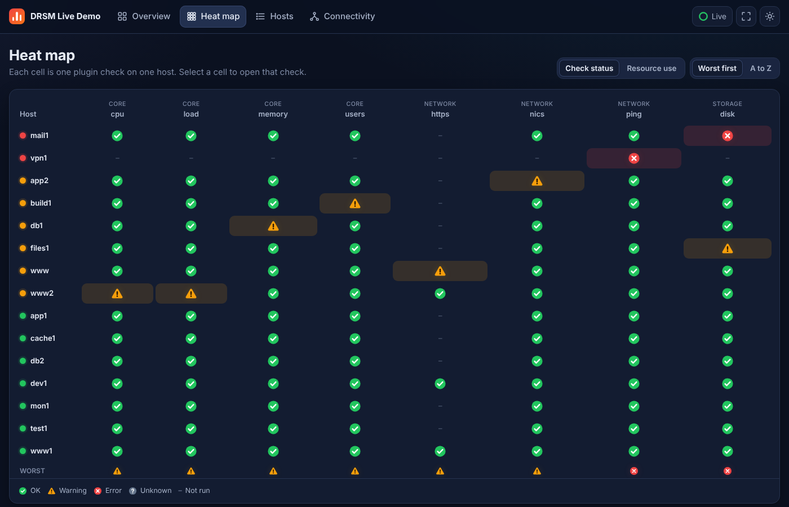
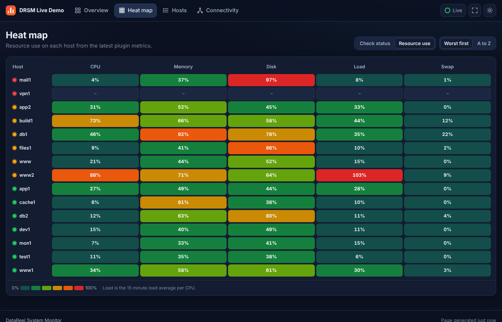
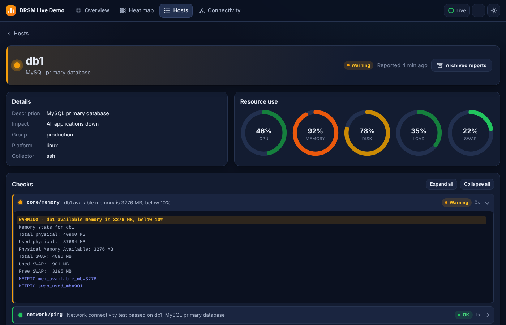
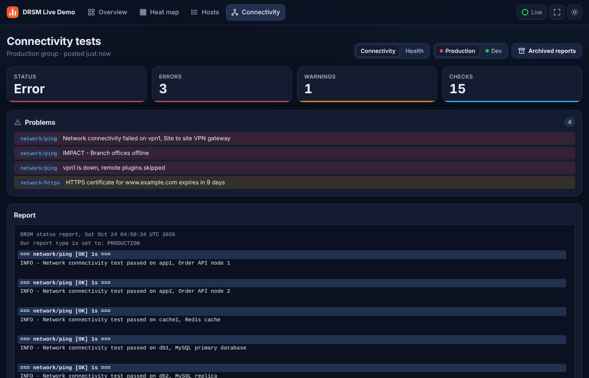
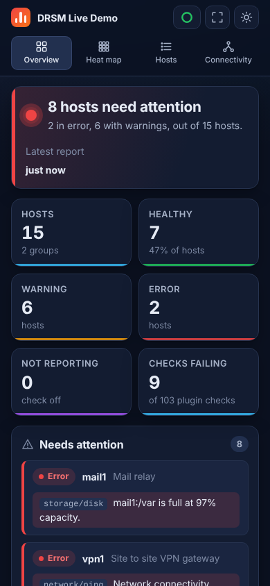

Web dashboard
The dashboard answers one question first: does anything need attention right now? Then it lets you drill from the whole estate down to one check on one host in two clicks.
It reads the report files that drsm_run.sh, system_report.sh and system_check.sh write, so it works with old and new setups. It needs PHP 7.2 or higher and loads no fonts or scripts from the internet. Try it in the live demo.
Overview
The Overview is the situational awareness page, built to read from across a room.
- Status banner: the overall state in one line, such as 8 hosts need attention, with the time of the latest report.
- Counters: hosts, healthy, warning, error, not reporting, and failing plugin checks.
- Needs attention: every current error and warning, worst first, each linked to the plugin that raised it.
- Group checks: the connectivity and health result for each host group.
- Host matrix: one colored square per host, for a quick scan.
- Host cards: CPU, memory and disk bars and the plugin states for every host, with search and filters by state and host group.


Heat map
The heat map puts every host against every check. Check status shows a status icon per plugin: a green check for OK, an amber triangle for a warning, a red cross for an error, and a gray question mark for unknown. Problem cells are shaded so they stand out. Select a cell to open that check in the host report. The bottom row shows the worst state in each column.

Resource use shows CPU, memory, disk, load per CPU and swap as a percentage, colored from teal through green, amber and orange to red, so the busiest hosts stand out before they alert. Sort Worst first or A to Z.

Hosts and host reports
The Hosts page is a table of every host, sortable by any column. Select a host for its report: details, gauges for CPU, memory, disk, load and swap, and a panel per plugin with the problems open first. Error and warning lines are highlighted, and Archived reports lists earlier runs.

Connectivity
The Connectivity page has the connectivity (probe) and health reports for each host group, the same reports that go out in the alert emails.

Phones, tablets and wall screens
- Responsive: every page works on a phone, a tablet and a desktop.
- Light and dark: follows the device setting; the sun and moon button switches it.
- Live refresh: pages reload every
$REFRESHseconds(60 by default). The ring button shows the countdown and pauses it. A reload waits while you are typing in a search box, and keeps your scroll position. - Wall display: the expand button hides the controls for a NOC screen. Esc leaves it.
- Not reporting: a host whose report is older than
$STALEminutes(60 by default) is shown in purple, so a stopped cron or a dead monitor does not look like a healthy estate. - Any URL path: serve it from
/sysadmin,/drsm/dashboardor anywhere else.

Customizing the dashboard
Add settings to $CONFIGdir/drsm.php:
$SITEtitle = 'MY System Monitor'; // Name in the top bar
$REFRESHseconds = 60; // Auto refresh, 0 turns it off
$STALEminutes = 60; // Report age that counts as not reporting, 0 turns it offFor colors and styles, edit $WWWdir/site/custom.css, which loads after the DRSM styles. Colors are CSS variables:
:root { --accent: #e11d48; }To replace the header and footer, add page_header.php and page_footer.php to $WWWdir/site. The header must print drsm_head_assets() to keep the styles and scripts, and leave <main> open:
<!DOCTYPE html>
<html lang="en">
<head>
<meta charset="utf-8">
<meta name="viewport" content="width=device-width, initial-scale=1">
<title>MY System Monitor</title>
<?php echo drsm_head_assets(); ?>
</head>
<body data-refresh="<?php echo (int)$REFRESHseconds; ?>">
<main class="page">A page_header.php from a release before the redesign still works, but the pages are unstyled until it prints drsm_head_assets().
Updates and reinstalls never overwrite $WWWdir/index.php or anything in $WWWdir/site.
Web only package
utils/make_web_demo.sh builds a copy of the dashboard for a host with nothing but Apache and PHP, such as a HostGator or other cPanel account. It finds its own files, so no server paths need to be set.
| Option | Meaning |
|---|---|
-p /url/path | URL path it is served from, default /drsm/dashboard |
-o outdir | Output directory, default ./drsm_web |
-t title | Name in the top bar |
-s | Add sample reports for made up hosts, for a public demo |
-a | Turn on the login and block direct access to the report folder |
It writes <outdir>/dashboard/ and <outdir>/drsm_dashboard.zip. How to upload it and keep its reports up to date is in Workstation with a hosted dashboard.
Login from outside your network
The dashboard can ask for a user name and password from anyone outside your own networks, while people on the internal network get straight in. It is off by default, so a public demo stays open, and it is plain PHP, so it works on shared hosting.
- Make a password hash for each account. Run this on any machine with PHP; it asks for the password without showing it:
$ php ~/drsm/utils/drsm_password.php admin - Add the settings to
config/drsm.php, with the printed line in$AUTHusers:$AUTHenable = 1; $AUTHnetworks = array('127.0.0.1/32', '::1/128', '10.0.0.0/8', '172.16.0.0/12', '192.168.0.0/16'); $AUTHusers = array( 'admin' => '$2y$10$...', ); - Block direct access to the
reportsfolder, which the login can not cover because it is served as plain files.make_web_demo.sh -adoes this; otherwise putRequire all deniedinreports/.htaccess. With login on, the Archived reports buttons read reports through the pages.
| Setting | Meaning |
|---|---|
$AUTHnetworks | Internal networks as CIDRs, IPv4 or IPv6, that need no login |
$AUTHproxies | Reverse proxies or CDNs in front of the site, such as Cloudflare. X-Forwarded-For is only read from these. Leave empty on a plain cPanel account |
$AUTHhttps | 1 (default) refuses logins over plain HTTP |
$AUTHidleminutes, $AUTHmaxhours | Sign out after 60 minutes idle, or 12 hours after login |
$AUTHmaxfails, $AUTHlockminutes | Lock an address out for 15 minutes after 5 failed logins |
$AUTHstatedir | Failed login counts, default config/auth, must be writable by the Web server |
Passwords are stored as bcrypt hashes. Sessions use HttpOnly, SameSite cookies, Secure on HTTPS, with a new session id at login, and the login and sign out forms carry a CSRF token.
Security
- Report text is escaped and printed as text, never run or rendered as HTML, so output from a monitored host cannot inject code into the page.
- Host names in URLs are checked, so
../paths are refused. - The Web only package blocks direct downloads of
status.json. - Reports still contain process lists and user names: turn on the login or put the dashboard behind a firewall, as in Web server.